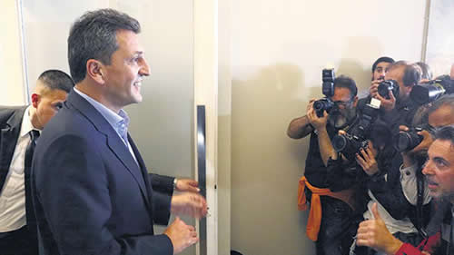

Real Chubut - Agencia de Noticias


Massa se acerca a la Cámara baja

Ya lo tendría decidido y lo anunciaría en las próximas horas. La disputa por la intendencia de Tigre retrasa el anuncio.
Si no hay alguna circunstancia extraordinaria, el primer candidato a diputado nacional que ofrecerá el Frente de Todos para la provincia de Buenos Aires será Sergio Massa. Las conversaciones están muy avanzadas entre el líder del Frente Renovador y Alberto Fernández, con quien lleva adelante las negociaciones. "Massa está entre dos situaciones, pero más cerca de una que de otra", admitió ayer el diputado Felipe Sola, hoy cercano a Fernández. "Creo que va a encabezar la lista de diputados por la provincia de Buenos Aires. Lo que pasa es que la estira y la estira", agregó. Antes de dar el sí a la candidatura a diputado, Massa quiere asegurarse los mejores términos del trato y eso incluye recuperar el control de su patria chica, Tigre, donde impulsa a su esposa Malena Galmarini como candidata a intendenta.
La resolución de lo que sucederá en Tigre es uno de los obstáculos. Por ahora, Massa insiste con ubicar a su esposa para la intendencia y así recuperar el control territorial. Esto no es un tema que pueda arruinar el acuerdo pero lo cierto es que por estas horas no está del todo cerrado.
La posibilidad de que Massa armara una fórmula para competir contra los Fernández en las PASO estuvo latente en algún momento. Sin embargo, las largas conversaciones con Alberto F. y los encuentros que Massa tuvo con CFK fueron poco a poco alejando ese escenario. Si bien a Massa unas PASO le servirían para mantenerse como un aspirante a la Presidencia, una derrota abultada en las primarias ante los Fernández no sería el antecedente deseado para alguien que ahora apunta a un lejano 2023. En el peronismo las derrotas, aunque sea en internas, no se olvidan fácilmente. Por otra parte, el primer lugar en la lista de diputados nacionales, ante un eventual triunfo del Frente de Todos, depositaría a Massa casi sin obstáculos en la presidencia de la Cámara baja.
Por un lado, conducir la Cámara de Diputados lo posiciona en la línea sucesoria. También le permitirá demostrar su capacidad de negociación a la hora de garantizar leyes que requiera el Poder Ejecutivo con los bloques opositores, pero también con los diputados oficialistas. Es cierto que presidir la Cámara no tiene todo el lustre y el protagonismo que puede pretender alguien que tiene en sus planes competir por la presidencia del país pero, si sale bien, puede facilitarle el camino.
Mientras tanto, en Tigre, el actual jefe comunal, Julio Zamora, insiste en ser el candidato del Frente de Todos y, en todo caso, que le den la posibilidad de competir en las PASO con Galmarini. Una opción que Massa no acepta. Una eventual derrota de Malena no sería lo mejor para sus planes a futuro. Ahora bien, si a Zamora no le permiten postularse está dispuesto a competir por fuera a través de un partido vecinal pero apoyando a los Fernández, esto es entregar para las elecciones su boleta corta junto al segmento presidencial del Frente de Todos. De paso se evitan el impedimento legal de las colectoras. Zamora está convencido que puede reelegir en Tigre y afirma que los números de los sondeos de opinión se lo confirman. Para algunos dirigentes del Frente de Todos la exigencia de Massa suena un tanto a capricho pero también consideran que la decisión anticipada de Zamora de jugar con el peronismo y con la fórmula FF, terminó por obligar a Massa a competir en su territorio.
El otro distrito que prácticamente está a punto de resolverse en el Frente de Todos es el de la ciudad de Buenos Aires. La aparición de Matías Lammens sirvió para apurar la idea de unidad que se busca en la Capital Federal y que parecía empantanarse con una pulseada entre Mariano Recalde y Victoria Donda. Sin embargo, la figura del presidente de San Lorenzo tiene mejor aceptación y consideran que su perfil es mucho más aceptable para el esquivo electorado porteño. Así las cosas, Recalde pasaría a competir por una banca en el Senado en tanto que Donda se concentrará en renovar su mandato como diputada.
Fuente: Página 12